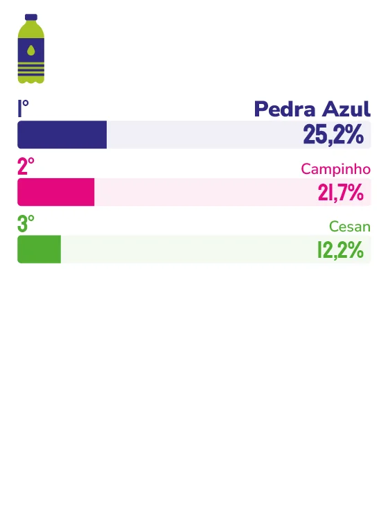

ÁGUA
Pedra Azul
Reconhecida mais uma vez como a água mais lembrada da Grande Vitória, Pedra Azul acelera investimentos em expansão industrial e novos produtos para os próximos anos.
Ser a primeira lembrança do consumidor, ano após ano, não acontece por acaso, e a CEO da Pedra Azul, Luciana Rambalducci, faz questão de frisar isso. “Esse prêmio representa confiança conquistada ao longo do tempo. É o resultado de um trabalho pautado em qualidade, consistência, transparência e muito respeito”, afirma. “Esse reconhecimento pertence a todos que fazem parte da nossa história: consumidores, parceiros, colaboradores e suas famílias, que nos acompanham há tanto tempo.”
Para a diretora da empresa, Angela Rambalducci, essa permanência na memória dos capixabas tem uma explicação simples: presença real no cotidiano. “A marca faz parte da rotina e da história das pessoas, está na casa das famílias, no trabalho, nos momentos de lazer e nas celebrações”, diz. “Ela permanece viva e vem primeiro à cabeça porque existe uma conexão real, construída através do cotidiano, da experiência direta e da confiança que se repete a cada dia.”
Esse vínculo, segundo Luciana, se sustenta em um tripé difícil de copiar: qualidade, proximidade e credibilidade. “Somos uma empresa legitimamente capixaba, com uma forte conexão regional, e praticamos diariamente valores fundamentados na verdade, no cuidado e no respeito às pessoas”, explica a CEO, destacando os investimentos em processos de ponta, energia renovável e automação como parte desse compromisso diário.
A modernização também tem sido peça-chave da estratégia recente. Angela cita a atualização das embalagens, a inovação industrial e o desenvolvimento de novos produtos como movimentos decisivos para manter a marca contemporânea. “Estamos acelerando investimentos para expandir nossa presença industrial e comercial, consolidando um momento importante para a empresa, que une a tradição que todos já conhecem a uma estrutura focada no crescimento e na expansão”, afirma.
Essa leitura de futuro conversa diretamente com o comportamento que a empresa enxerga no consumidor capixaba hoje. “Ele é muito receptivo a marcas locais que entregam qualidade e cuidado. Está atento, valoriza boas escolhas e busca mais saúde, praticidade, bem-estar”, observa Luciana, reforçando que o foco segue no fortalecimento da presença nos pontos de venda e em parcerias estratégicas, sem abrir mão da qualidade e da sustentabilidade.

Luciana Rambalducci
CEO da Pedra Azul
“No dia a dia, operamos com um compromisso real com a sustentabilidade e a melhoria contínua, investindo em processos de ponta, energia renovável e automação, sem nunca perder nossa essência.”

Angela Rambalducci
Diretora da Pedra Azul
“O Espírito Santo pode esperar uma marca cada vez mais forte e preparada para os próximos anos. O consumidor pode esperar, muito em breve, novidades importantes no portfólio, incluindo novas embalagens e novos produtos que estão em desenvolvimento.”
34
